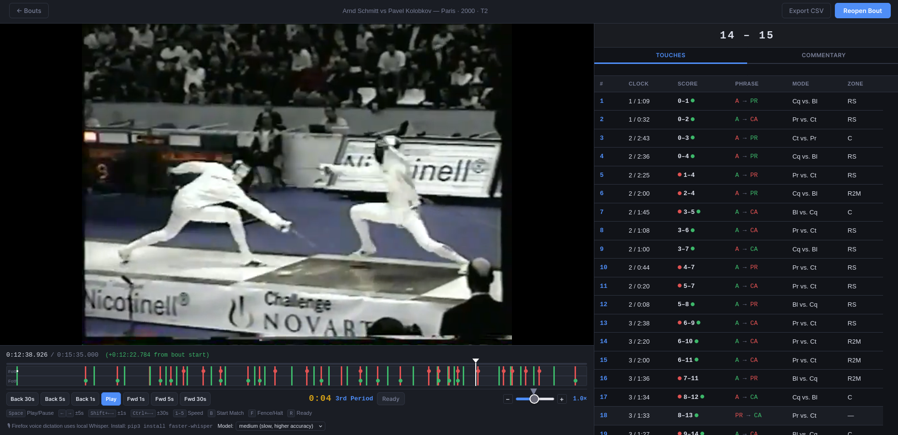

A web application for uploading and annotating fencing match videos — identifying actions, modes, targets, and patterns to find order out of chaos.
Launch Xenophon
Xenophon is a web application that lets you upload a video of a fencing match and quickly and efficiently review and annotate all the actions and points.
Xenophon is a video editing and annotation tool specifically designed to review recorded fencing matches. It lets you mark when the fencing begins and ends and notate the specific details of what occurred during the match.
A fencing match can seem random and chaotic as fencers move back and forth to score a point. But there is a logic to a well-fenced match that can be observed if you look closely. Xenophon finds order out of chaos by giving a practical framework for identifying:
Xenophon uses a simple and efficient interface that lets you focus on the fencing.
Xenophon is for anyone who wants to better understand fencing. It's for anyone who wants a way to carefully review pre-recorded videos of fencing matches to identify patterns, spot errors, and improve their understanding of what is really going on in a match.
This applies whether you are reviewing your own fencing, your students', or matches of elite international champions.
Taken from The Spirit of Épée by Delhomme, DiMartino & Carré.
This initial version of Xenophon is a manual tool that requires close attention from its users to produce quality data. Based on user feedback, we hope that future versions can automate more and more of these review functions to make the process even easier, more efficient, and more productive.
Stay tuned for Xenophon 2.0.
Xenophon was an Athenian soldier, historian, and student of Socrates who lived in the 4th century BC. His most celebrated work, the Anabasis, is a masterpiece of tactical documentation — a precise, firsthand account of leading 10,000 Greek mercenaries through hostile territory that remains a model of careful observation and recorded analysis.
A man who combined battlefield experience with a scholar's discipline, Xenophon believed that victory belongs to those who study conflict most rigorously. We named our annotation tool after him because his legacy — soldier, observer, recorder, analyst — is an inspiration for what we are building.